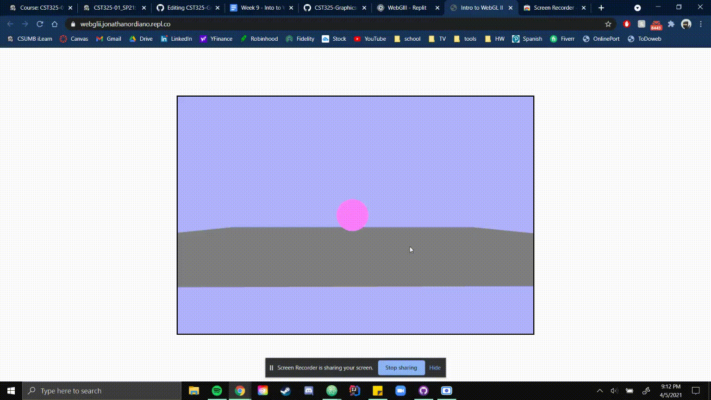

Journal 6 WebGL2
This weeks assignment was more graspable and helped us catch-up.
Over spring break it was hard for us to meet up since we had different schedules
but we were able to get it done and I reviewed the rasterazation pipeline.
At first we were having trouble with our file from the start with the fetch
erorrs and they couldn't grab the shaders.

We fixed this by using a different compiler, replit assuming it was something
with the root file?

final product, got the ball to flash yellow white and pink and was able to make the camera move!